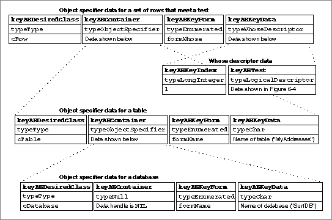

Handling Whose Tests
If your application provides an object-counting function and an object-comparison function in addition to the appropriate object accessor functions, the Apple Event Manager can resolve object specifier records that specifyformTestwithout any other assistance from your application. The Apple Event Manager translates object specifier records of key formformTestinto object specifier records of key formformWhose. This involves collapsing the key form and key data from two object specifier records in a container hierarchy into one object specifier record with the key formformWhose.Some applications may find it more efficient to translate whose tests into their own query languages rather than letting the Apple Event Manager handle the tests. This is useful only for applications that can make use of a test combined with either an absolute position or a range to locate objects. If you want the Apple Event Manager to let your application handle whose tests, set the
kAEIDoWhoseflag in thecallbackFlagsparameter of theAEResolvefunction. If for any reason one of your application's object accessor functions chooses not to handle a particular whose descriptor record, it should returnerrAEEventNotHandledas the result code, and the Apple Event Manager will try again using the original object specifier records, just as if thekAEIDoWhoseflag were not set.The key data for
formWhoseis specified by a whose descriptor record, which is a coerced AE record of descriptor typetypeWhoseDescriptor. The data for a whose descriptor record consists of the two keyword-specified descriptor records shown in Table 6-5.A whose descriptor record is never created directly by an application. The Apple Event Manager creates a whose descriptor record whenever an object specifier record of key form
formTestis used to describe the container for elements described by an object specifier record of key formformAbsolutePositionorformRange, with some exceptions as noted in this section.For example, Figure 6-3 on page 6-22 shows four object specifier records that show the container hierarchy for the first row that meets a test in the table "MyAddresses" of the database "SurfDB." The top two object specifier records in that figure use the key forms
formAbsolutePositionandformTestto describe elements in a container. When it receives these two object specifier records, the Apple Event Manager collapses them into one, as shown in Figure 6-7. It then calls the application's object-counting function to find out how many objects of classcRowthe table contains and the object-comparison function to test the rows in the table until it finds the first row that passes the test.Figure 6-7 A container hierarchy created by the Apple Event Manager using a whose descriptor record

If the elements to be tested are described by an object specifier record of key form
formAbsolutePositionorformRangebut are not of the same object class as their container, the Apple Event Manager cannot collapse the existing object specifier records into a whose descriptor record. Instead, the Apple Event Manager creates a whose descriptor record as if a third object specifier record of key formformAbsolutePositionandkAEAllwere inserted between the object specifier record for the container and that for the tested elements. For example, the Apple Event Manager would interpret a request for "character 1 of word whose first letter = 'a'" as "character 1 of every word whose first letter = 'a'".When an object specifier record of key form
formTestis used to describe the container for elements described by an object specifier record of key formformRange, the Apple Event Manager will, under certain conditions, coerce the corresponding range descriptor record to a whose range descriptor record, which is a coerced AE record oftypeWhoseRange. The data for a whose range descriptor record consists of two keyword-specified descriptor records with the descriptor types and data shown in
Table 6-6.A whose range descriptor record describes the absolute position of the boundary elements, within the set of all elements that pass a test, that identify the beginning and end of the desired range.
The Apple Event Manager coerces a range descriptor record to a whose range descriptor record if the specified container and its elements are of the same class, if the container for the specified range of elements is a group of Apple event objects that pass a test, and if the boundary objects in the original range descriptor record meet these conditions:
If these conditions are not met, the Apple Event Manager doesn't create a whose range descriptor record. Instead, as described earlier in this section, the Apple Event Manager creates a whose descriptor record as if the original request specified every element that passed the test.
- Both boundary objects are of the same object class as the Apple event objects in the range they specify.
- The object specifier record for each boundary object specifies its container with a descriptor record of descriptor type
typeCurrentContainer.- The object specifier record for each boundary object specifies a key form of
formAbsolutePosition.If your application sets the
kAEIDoWhoseflag in thecallbackFlagsparameter ofAEResolve, you should provide object accessor functions that can handleformWhose. These functions should coerce the whose descriptor record specified as key data for an object specifier record to an AE record and extract the data from the AE record by calling theAEGetKeyPtrandAEGetKeyDescfunctions. If the keyword-specified descriptor record with the keywordkeyAEIndexspecifies descriptor typetypeWhoseRange, your object accessor function must also coerce that descriptor record to an AE record and extract the data. Your object accessor function should then attempt to locate the requested objects and, if successful, return a token that identifies them.If your application sets the
kAEIDoWhoseflag and attempts to resolve every whose descriptor record it receives, the Apple Event Manager does not attempt to resolve object specifier records of any key form. The object-counting and object-comparison functions are never called, and your application is solely responsible for determining the formats and types of all tokens.